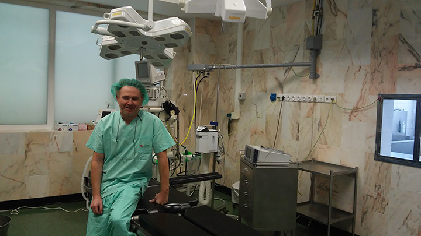
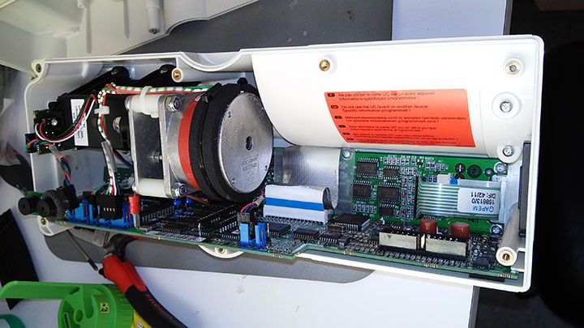
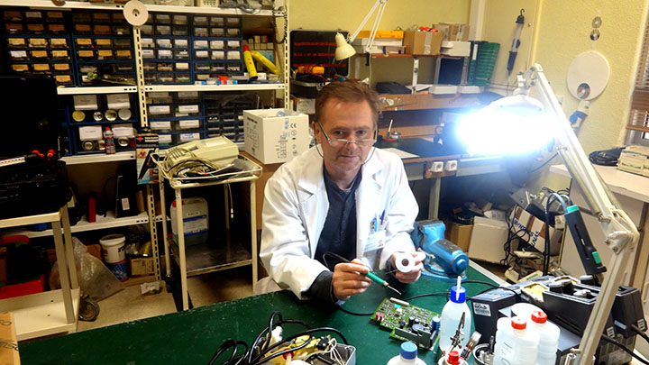

BLOG LIST
January 1 2015
by ADMIN

ЗАДОВОЛЕННЯ НА ЛИЦІ.ОЗВУЧИВ ОФІЦІЙНО ПРО МОЄ ЗВІЛЬНЕННЯ. ІНФОРМУЮ ЗНАЙОМИХ ЗІ МНОЮ ПРАЦІВНИКІВ ТА БАЧУ ЇХ ЗДИВОВАНУ РЕАКЦІЮ НА ЛИЦЯХ .
Так це досить незвичне відчуття зміни усього нажитого та набутого за 13 років на одному місці. Мушу признати що то імпонує, вражає та страшить але не мене бо я твердо виріши міняти.. міняти на краще
January 1 2014
by ADMIN

В голові вирує думка про звільнення..
Роблю фото для колекції можливо виложу на якихось сайтах для реклами, подобоється мені техніка у відкритому та доступному форматі та ще коли толковий дизайн та приємне розміщення електронних компонентів
December 18 2012
by ADMIN

Випадкове фото, хтось мене заловив коли я займався (ви)пайкою елементів для власних потреб з електронного мотлоху.
ще з дитинства полюбив випаювати детальки та збирати у коробочки... то на роботі у вільний час теж це робив. Позаду мій робочий стіл та різне причандалля... та коробки де усе це я складував.